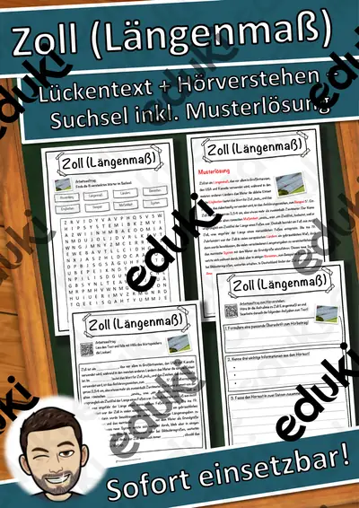
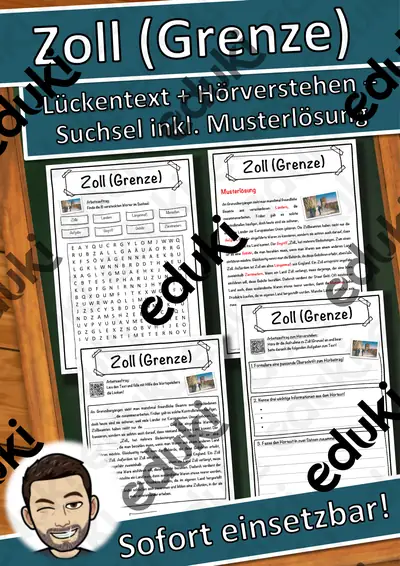

Größen, Einheiten und Uhrzeit: Arbeitsblätter für Klasse 2–6 (Mathematik)
Größen messen, vergleichen und umrechnen ist ein Dauerthema ab Klasse 2. Länge, Gewicht, Zeit und Hohlmaße begegnen den Kindern ständig im Alltag.
Zum Themenkern zählen Längen, Gewichte und Uhrzeit. Als Vertiefung bieten sich Zeitspannen und Temperatur an, am Ende steht oft Umrechnen.
Je nach Bundesland variiert die genaue Einordnung; üblich ist das Fach Mathematik in den Klassen 2 bis 6. Die Kinder messen mit geeigneten Geräten, wählen passende Einheiten und rechnen um.
Ob Vertretungsstunde, Stationenarbeit oder Hausaufgabe: Die Arbeitsblätter zu Größen, Einheiten und Uhrzeit lassen sich flexibel einsetzen, etwa mit Längen als Auftakt und Umrechnen als Abschluss. Musterlösungen sparen die Korrekturzeit. Mit den Lückentexten und dem Hörverstehen per QR-Code wird auch das Zuhören trainiert.
Aus unserem Katalog gehören 5 Materialien zu diesem Thema, darunter Zoll (Längenmaß) Lückentext mit Wortspeicher, Zoll (Grenze) Lückentext mit Wortspeicher und Uhr Lückentext mit Wortspeicher Hörverstehen. Der Bestand umfasst 5 Lückentexte mit Hörverstehen und reicht über Klasse 5–7. Eine Messrallye durch das Schulhaus mit selbst gewählten Geräten verankert Einheiten im Gedächtnis.
Das gehört zum Thema
Passende Arbeitsblätter und Materialpakete

Zoll (Längenmaß) Lückentext mit Wortspeicher Hörverstehen und Suchsel

Zoll (Grenze) Lückentext mit Wortspeicher Hörverstehen und Suchsel

Uhr Lückentext mit Wortspeicher Hörverstehen und Suchsel

Thermometer Lückentext mit Wortspeicher Hörverstehen und Suchsel

Kilometer pro Stunde Lückentext mit Wortspeicher Hörverstehen und Suchsel
Häufige Fragen
Für welche Klassenstufe passen die Arbeitsblätter zu Größen, Einheiten und Uhrzeit?
Der Schwerpunkt liegt auf Klasse 6; insgesamt deckt die Auswahl (5 Titel) Klasse 5–7 ab. In der Beschreibung jedes Materials steht die empfohlene Stufe.
Welche Inhalte decken die Materialien zu Größen, Einheiten und Uhrzeit ab?
Behandelt werden unter anderem Längen, Gewichte, Uhrzeit und Zeitspannen. Welche Aspekte in Ihrer Klasse Vorrang haben, richtet sich nach dem Lehrplan Ihres Bundeslandes.
Wie setze ich Größen, Einheiten und Uhrzeit im Unterricht ein?
Eine Messrallye durch das Schulhaus mit selbst gewählten Geräten verankert Einheiten im Gedächtnis. Danach genügt meist ein Material als Einstieg und eines zum Üben.
Mehr Material nach Fach und Klasse
- Alle Materialien Biologie
- Arbeitsblätter Biologie Klasse 2
- Arbeitsblätter Biologie Klasse 3
- Arbeitsblätter Biologie Klasse 4
- Arbeitsblätter Biologie Klasse 5
- Arbeitsblätter Biologie Klasse 6
- Unterrichtsmaterial Klasse 2
- Unterrichtsmaterial Klasse 3
- Unterrichtsmaterial Klasse 4
- Unterrichtsmaterial Klasse 5
- Unterrichtsmaterial Klasse 6
Verwandte Lehrplanthemen
- Addition und Subtraktion (Mathematik, Klasse 1–4)
- Daten, Diagramme und Wahrscheinlichkeit (Mathematik, Klasse 3–9)
- Das kleine Einmaleins (Mathematik, Klasse 2–4)
- Geometrie: Körper, Flächen und Formen (Mathematik, Klasse 1–6)
- Zahlenraum und Stellenwerte (Mathematik, Klasse 1–4)